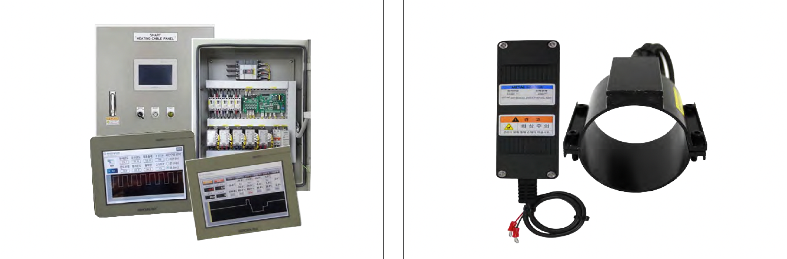
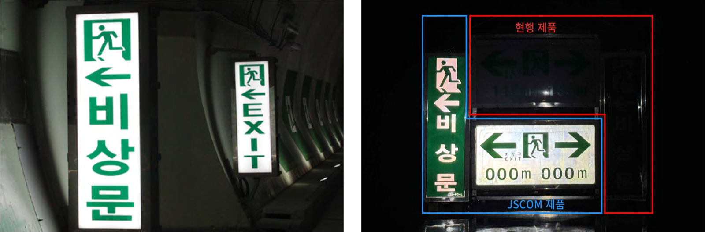
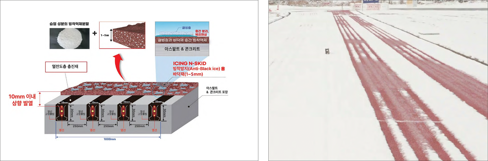
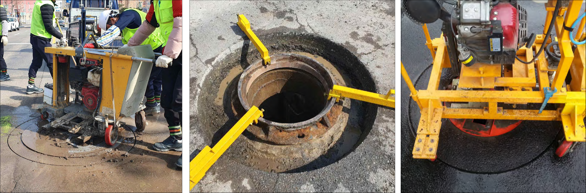

재난의 양상은 갈수록 복잡해지고, 그 발생 가능성을 예측하고 대응하는 일 역시 더욱 어려워지고 있다. 노후화된 도시 시설과 급변하는 기후 환경은 일상 곳곳의 위험을 키우고 있으며, 특히 겨울철에는 한파와 폭설, 결빙 등 계절적 요인까지 더해져 재난에 대한 선제적 대응의 중요성이 커지고 있다. 재난안전기술 역시 이런 변화에 발맞춰 계속 진화 중이다. 다양한 현장의 문제를 해결하기 위해 탄생한 최신 재난안전신기술을 소개한다.
전기선 대신 따뜻한 물로 눈을 녹인다
PTC 메탈히터-PEX배관을 활용한 온수순환 제설시스템
(주)에스와이전기
겨울철 도로는 눈과 얼음이 쌓이면서 순식간에 미끄러운 위험 구간으로 변한다. 기존에는 도로에 전기 열선을 직접 매설해 열을 발생시키고 쌓인 눈과 얼음을 녹이는 방식이 주로 활용됐다. 이 기술은 전기 열선 대신 ‘물’을 열 전달 매체로 활용한다는 점에서 차별화된다. PTC* 메탈히터로 물을 데운 뒤 도로 아래에 설치된 3중 배관을 통해 순환시키고, 이때 전달되는 열로 노면의 눈과 얼음을 녹이는 방식이다. 여기에 기상 데이터와 현장 센서가 폭설이나 블랙아이스 발생 징후를 감지하면 시스템이 자동으로 작동해 필요한 시점에 제설을 시작한다. 전기선을 도로에 직접 매설하지 않기 때문에 화재나 누전 위험을 낮출 수 있다는 것도 장점이다. 이미 서울 일부 자치구에서는 이 기술을 실제 제설 공사에 적용하며 겨울철 도로 안전을 높이는 새로운 해법으로 활용하고 있다.
*PTC(Positive Temperature Coefficient): 온도가 오르면 저항이 커져 스스로 발열을 조절하는 소자

Key Points온수 순환으로 눈을 녹이고, 전기 열선 없이도 화재 위험까지 줄인 제설 시스템
이 기술 바로보기불이 꺼져도 길을 비추는 ‘터널 유도등’
집광 및 재귀반사 광학 구조를 이용한 터널 재난 대응형 비상유도등
㈜제이에스컴
터널 안에서 정전이 발생하면 익숙했던 공간이 순식간에 암흑으로 바뀌고, 어디로 대피해야 할지 판단하기조차 어려워진다. 이 유도등은 바로 이런 순간에도 피난 방향을 놓치지 않도록 설계됐다. 평상시에는 내장된 광원이 표지판을 밝히지만, 전원이 끊기면 별도의 발광원에 의존하지 않고 외부의 빛을 활용해 피난 방향을 계속 표시한다. 집광 및 재귀반사 광학구조 기술을 적용해 외부에서 들어온 빛을 효과적으로 모으고 다시 반사함으로써 어둠 속에서도 방향 표시가 눈에 띄도록 한 것이다. 여기에 이중 전원 구조를 더해 예기치 않은 전원 장애 상황에서도 안정적인 작동이 가능하도록 신뢰성을 높였다. 정전이라는 돌발 상황에서도 피난자의 시야를 확보하고 안전한 대피를 돕는 기술이다.

Key Points정전이 발생해도 외부 빛을 반사해 피난 방향을 계속 알려주는 터널 유도등
이 기술 바로보기겨울철 도로 위 공포 ‘블랙아이스’ 막는 도로바닥재
노면 블랙아이스 부착저감 및 열선에 의한 융설성능을 갖는 모르타르형 도로바닥재 마감 기술
한라케미칼(주)
겨울철 도로 위에서 가장 예측하기 어려운 위험 중 하나가 바로 블랙아이스다. 눈이나 비가 얇게 얼어붙어 노면에 투명한 얼음막을 만들기 때문에 운전자 눈에 잘 띄지 않는 데다, 차량의 제동력과 조향 능력까지 크게 떨어뜨릴 수 있다. 이 기술은 이러한 블랙아이스를 사전에 예방하기 위해 도로 표면에 얕은 홈을 내고 그 안에 열선을 고정한 뒤, 열전도율이 높은 재료로 빈틈을 채우는 방식을 적용했다. 가장 위에는 얼음이 쉽게 달라붙지 않는 특수 바닥재를 덮어 마감한다. 특히 발열선에서 노면 표면까지의 두께가 10mm를 넘지 않아 적은 열로도 표면을 빠르게 데워 눈과 얼음을 효과적으로 녹일 수 있다. 여기에 표면에 형성된 미세한 요철이 차량 타이어와 노면의 마찰력을 높여 미끄러짐을 줄이는 데 도움을 준다. 이미 여러 지방자치단체와 공공기관의 도로에 적용되며 겨울철 도로 안전을 높이는 기술로 활용되고 있다.

Key Points얼음과의 부착을 줄이는 얇은 도로바닥재에, 열선을 더해 눈까지 녹이는 기술
이 기술 바로보기소음은 줄이고 공사 속도는 높인 ‘맨홀 보수’ 기술
회전비트를 이용한 파쇄장치와 배기가스 순환 온도 유지 장치를 이용한 맨홀 보수기술
㈜평강산업개발 외
오래된 맨홀은 시간이 지나면서 주변 도로가 내려앉거나 맨홀과 노면 사이의 높이 차이가 생기기 쉽다. 이를 보수하려면 기존에는 작업자가 맨홀 주변의 도로 포장을 일일이 깨고 걷어낸 뒤 다시 포장해야 해 작업 시간과 인력이 많이 필요했다. 이 기술은 이러한 보수 작업을 보다 빠르고 간편하게 할 수 있도록 개발됐다. 회전비트를 이용해 맨홀 주변의 포장을 빠르게 절삭한 뒤, 파낸 자리에 속경 콘크리트를 채우고 특수 장치에 보관한 아스콘으로 마무리한다. 특히 이 장치는 차량 배기가스에서 발생하는 열을 모아 아스콘의 온도를 일정하게 유지하기 때문에 별도의 가열 과정 없이 현장에서 바로 포장 작업을 진행할 수 있다. 적재함에는 전기식 개폐장치를 적용해 작업자가 보다 안전하게 장치를 열고 닫을 수 있도록 했으며, 기존 방식보다 굴착 과정에서 발생하는 소음도 줄여 주변의 작업 불편을 최소화했다. 맨홀 보수에 필요한 시간과 인력을 줄이면서 작업자의 안전과 주변 환경까지 고려한 현장 맞춤형 기술이다.

Key Points회전비트 굴착과 배기가스 재활용으로 공사 기간·소음까지 줄인 맨홀 보수기술
다른 재난안전신기술도 있어요!지정일 2026.04. ~ 2026.09.
| 기술보유자 | 신기술 |
|---|---|
| 신정기공 | 회전 웨어링 내장형 수중 축류·사류펌프 |
| 주식회사 아성산업개발 | 부착판부 슬라이딩 기능을 가진 이중 조립틀의 금속제 패널 |
| (주)스마일이앤지 | RAMS 기반 구역제어 배관 동결방지시스템 |
| 주식회사 다음이앤씨 외 3건 | 콘크리트 구조물 우각부에서 전단강화 임베디드너트 전단연결재와 프리플렉스 강재를 이용한 보강공법 |